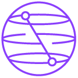

Qiskit
Fall Fest 2026
10년의 양자 클라우드,
그 다음 이야기를 씁니다.Ten years of quantum on the cloud.
Here's what's next.
최전선에 도전하거나, 그 첫걸음을 내딛거나. SQRT와 함께하는 3일간의 양자컴퓨팅 행사입니다. Push the frontier, or take your first step into it. Three days of quantum computing with SQRT.
2026년 10월 29일(목)~31일(토)October 29-31, 2026 Hosted by SQRT
Hosted by SQRT네 가지 참여 방법Four ways to take part
세미나Seminar
SNU 교수진, SQRT 연사의 강연으로 여는 첫날 (IBM Quantum 후원)Opening day of talks from SNU faculty and SQRT, supported by IBM Quantum
일정 보기View schedule해커톤 (심화)Hackathon (Advanced)
오픈 문제 · 자동 채점Open-ended problem · auto-graded
자세히 보기Learn more아이디어 경진대회 (입문)Idea Contest (Beginner)
테이크홈 + 주말 발표 · 코딩/물리 불필요Take-home + weekend presentation · no coding or physics needed
자세히 보기Learn more포스터 세션Poster Session
기존 연구 결과를 짧은 포스터 발표로 공유 (해커톤과 별개)Share existing research as a short poster talk, separate from the hackathon tracks
자세히 보기Learn more
Qiskit Fall Fest란What is Qiskit Fall Fest전 세계 곳곳에서 열리는 양자컴퓨팅 축제 A global quantum computing celebration
Qiskit Fall Fest는 IBM Quantum이 지원하고 전 세계 각지의 호스트 팀이 자율적으로 기획·운영하는 행사 시리즈입니다. 2025년에는 150개 팀, 3만 2천 명 이상이 참여했습니다. SNU에서는 SQRT(SNU Quantum Research Team)가 호스트를 맡아, 2026년 "10년의 양자 클라우드" 테마 아래 강연·해커톤·포스터 세션으로 구성된 3일간의 행사를 준비합니다. Qiskit Fall Fest is IBM Quantum's global series of events, organized independently by host teams around the world. In 2025 alone, over 32,000 participants joined events led by 150 hosts worldwide. At SNU, SQRT (SNU Quantum Research Team) is hosting a 3-day event for 2026's "decade of quantum on the cloud" theme: a mix of talks, a two-track hackathon, and a poster session.
전공은 상관없습니다. 관심만 있으면 됩니다Any major. Just bring curiosity.
이미 큐비트 회로를 짜본 적 있다면You already write quantum circuits
Qiskit이나 코딩 경험이 있다면 전공에 상관없이 참여할 수 있는 트랙입니다. 오픈 문제를 풀어 제출하면 자동으로 채점되며, 우수 팀은 시상식에서 발표합니다.Open to any major, as long as you have some Qiskit or coding experience. Submit your solution to an open-ended problem for automatic grading, and top teams present at the awards ceremony.
Track A · 해커톤 자세히 보기See Track A · Hackathon코드를 한 번도 짜본 적 없다면You've never written code
코딩도, 물리도 필요 없습니다. 자기 전공의 문제의식을 양자컴퓨팅 아이디어로 발전시키는 테이크홈 형식의 트랙으로, 주말에 짧게 발표합니다.No coding, no physics required. A take-home track for turning a question from your own field into a quantum computing idea, with a short weekend presentation.
Track B · 아이디어 경진대회See Track B · Idea Contest세미나로 시작해, 트랙별 해커톤으로Starts with a seminar, splits into two tracks
Day 1
세미나Seminar
교수진·SQRT 연사 강연, IBM Quantum 후원Talks from SNU faculty and SQRT, with support from IBM Quantum
Day 2
해커톤 시작Hackathon kickoff
Track A 문제 공개 · Track B 브리핑Track A problem released · Track B briefing
Day 3
최종 발표Final presentations
주말 발표 및 시상Weekend presentations and awards